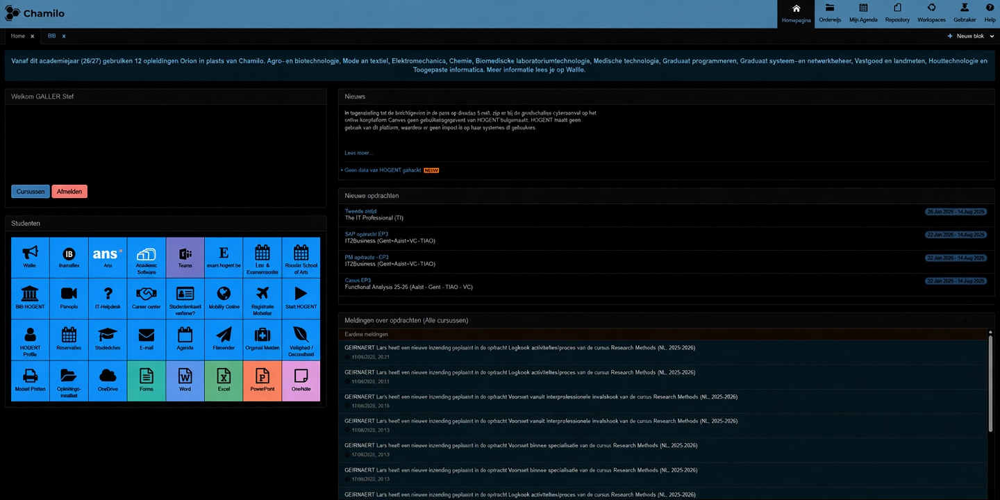

Dark mode voor Chamilo HOGENT
Een Chrome-extensie die Chamilo donker maakt.

Plaats DarkMode.jpg in dezelfde map als dit bestand.
Installeren
Download en pak uit
Pak de ZIP uit in een map, bijvoorbeeld
chamilo-dark-mode.Open je extensies
Ga naar
chrome://extensions.Zet Ontwikkelaarsmodus aan
De schakelaar staat rechtsboven.
Klik op Uitgepakte extensie laden
Die knop verschijnt nadat je de ontwikkelaarsmodus aanzet.
Kies de map
Selecteer de map die je net hebt uitgepakt. Klaar.